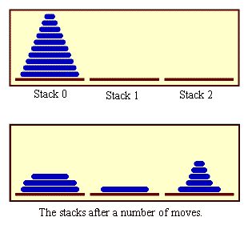
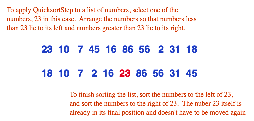
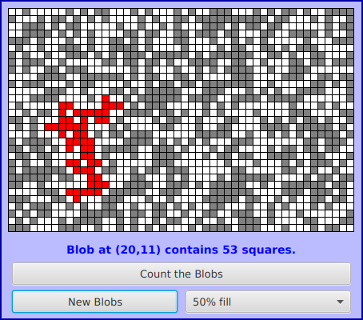

Section 9.1
Recursion
At one time or another, you've probably been told that you can't define something in terms of itself. Nevertheless, if it's done right, defining something at least partially in terms of itself can be a very powerful technique. A recursive definition is one that uses the concept or thing that is being defined as part of the definition. For example: An "ancestor" is either a parent or an ancestor of a parent. A "sentence" can be, among other things, two sentences joined by a conjunction such as "and." A "directory" is a part of a disk drive that can hold files and directories. In mathematics, a "set" is a collection of elements, which can themselves be sets. A "statement" in Java can be a while statement, which is made up of the word "while", a boolean-valued condition, and a statement.
Recursive definitions can describe very complex situations with just a few words. A definition of the term "ancestor" without using recursion might go something like "a parent, or a grandparent, or a great-grandparent, or a great-great-grandparent, and so on." But saying "and so on" is not very rigorous. (I've often thought that recursion is really just a rigorous way of saying "and so on.") You run into the same problem if you try to define a "directory" as "a file that is a list of files, where some of the files can be lists of files, where some of those files can be lists of files, and so on." Trying to describe what a Java statement can look like, without using recursion in the definition, would be difficult and probably pretty comical.
Recursion can be used as a programming technique. A recursive subroutine (or recursive method) is one that calls itself, either directly or indirectly. To say that a subroutine calls itself directly means that its definition contains a subroutine call statement that calls the subroutine that is being defined. To say that a subroutine calls itself indirectly means that it calls a second subroutine which in turn calls the first subroutine (either directly or indirectly). A recursive subroutine can define a complex task in just a few lines of code. In the rest of this section, we'll look at a variety of examples, and we'll see other examples in the rest of the book.
9.1.1 Recursive Binary Search
Let's start with an example that you've seen before: the binary search algorithm from Subsection 7.4.1. Binary search is used to find a specified value in a sorted list of items (or, if it does not occur in the list, to determine that fact). The idea is to test the element in the middle of the list. If that element is equal to the specified value, you are done. If the specified value is less than the middle element of the list, then you should search for the value in the first half of the list. Otherwise, you should search for the value in the second half of the list. The method used to search for the value in the first or second half of the list is binary search. That is, you look at the middle element in the half of the list that is still under consideration, and either you've found the value you are looking for, or you have to apply binary search to one half of the remaining elements. And so on! This is a recursive description, and we can write a recursive subroutine to implement it.
Before we can do that, though, there are two considerations that we need to take into account. Each of these illustrates an important general fact about recursive subroutines. First of all, the binary search algorithm begins by looking at the "middle element of the list." But what if the list is empty? If there are no elements in the list, then it is impossible to look at the middle element. In the terminology of Subsection 8.2.2, having a non-empty list is a "precondition" for looking at the middle element, and this is a clue that we have to modify the algorithm to take this precondition into account. What should we do if we find ourselves searching for a specified value in an empty list? The answer is easy: If the list is empty, we can be sure that the value does not occur in the list, so we can give the answer without any further work. An empty list is a base case for the binary search algorithm. A base case for a recursive algorithm is a case that is handled directly, rather than by applying the algorithm recursively. The binary search algorithm actually has another type of base case: If we find the element we are looking for in the middle of the list, we are done. There is no need for further recursion.
The second consideration has to do with the parameters to the subroutine. The problem is phrased in terms of searching for a value in a list. In the original, non-recursive binary search subroutine, the list was given as an array. However, in the recursive approach, we have to be able to apply the subroutine recursively to just a part of the original list. Where the original subroutine was designed to search an entire array, the recursive subroutine must be able to search part of an array. The parameters to the subroutine must tell it what part of the array to search. This illustrates a general fact that in order to solve a problem recursively, it is often necessary to generalize the problem slightly.
Here is a recursive binary search algorithm that searches for a given value in part of an array of integers:
/**
* Search in the array A in positions numbered loIndex to hiIndex,
* inclusive, for the specified value. If the value is found, return
* the index in the array where it occurs. If the value is not found,
* return -1. Precondition: The array must be sorted into increasing
* order.
*/
static int binarySearch(int[] A, int loIndex, int hiIndex, int value) {
if (loIndex > hiIndex) {
// The starting position comes after the final index,
// so there are actually no elements in the specified
// range. The value does not occur in this empty list!
return -1;
}
else {
// Look at the middle position in the list. If the
// value occurs at that position, return that position.
// Otherwise, search recursively in either the first
// half or the second half of the list.
int middle = (loIndex + hiIndex) / 2;
if (value == A[middle])
return middle;
else if (value < A[middle])
return binarySearch(A, loIndex, middle - 1, value);
else // value must be > A[middle]
return binarySearch(A, middle + 1, hiIndex, value);
}
} // end binarySearch()
In this routine, the parameters loIndex and hiIndex specify the part of the array that is to be searched. To search an entire array, it is only necessary to call binarySearch(A, 0, A.length - 1, value). In the two base cases—when there are no elements in the specified range of indices and when the value is found in the middle of the range—the subroutine can return an answer immediately, without using recursion. In the other cases, it uses a recursive call to compute the answer and returns that answer.
Most people find it difficult at first to convince themselves that recursion actually works. The key is to note two things that must be true for recursion to work properly: There must be one or more base cases, which can be handled without using recursion. And when recursion is applied during the solution of a problem, it must be applied to a problem that is in some sense smaller—that is, closer to the base cases—than the original problem. The idea is that if you can solve small problems and if you can reduce big problems to smaller problems, then you can solve problems of any size. Ultimately, of course, the big problems have to be reduced, possibly in many, many steps, to the very smallest problems (the base cases). Doing so might involve an immense amount of detailed bookkeeping. But the computer does that bookkeeping, not you! As a programmer, you lay out the big picture: the base cases and the reduction of big problems to smaller problems. The computer takes care of the details involved in reducing a big problem, in many steps, all the way down to base cases. Trying to think through this reduction in detail is likely to drive you crazy, and will probably make you think that recursion is hard. Whereas in fact, recursion is an elegant and powerful method that is often the simplest approach to solving a complex problem.
A common error in writing recursive subroutines is to violate one of the two rules: There must be one or more base cases, and when the subroutine is applied recursively, it must be applied to a problem that is smaller than the original problem. If these rules are violated, the result can be an infinite recursion, where the subroutine keeps calling itself over and over, without ever reaching a base case. Infinite recursion is similar to an infinite loop. However, since each recursive call to the subroutine uses up some of the computer's memory, a program that is stuck in an infinite recursion will run out of memory and crash before long. In Java, the program will crash with an exception of type StackOverflowError.
9.1.2 Towers of Hanoi
We have been studying an algorithm, binary search, that can easily be implemented with a while loop, instead of with recursion. Next, we turn to a problem that is easy to solve with recursion but difficult to solve without it. This is a standard example known as "The Towers of Hanoi." The problem involves a stack of various-sized disks, piled up on a base in order of decreasing size. The object is to move the stack from one base to another, subject to two rules: Only one disk can be moved at a time, and no disk can ever be placed on top of a smaller disk. There is a third base that can be used as a "spare." The starting situation for a stack of ten disks is shown in the top half of the following picture. The situation after a number of moves have been made is shown in the bottom half of the picture. (These illustrations are from a sample program from Chapter 12, TowersOfHanoiGUI.java, which displays an animation of the step-by-step solution of the problem; however, that program uses some techniques that you haven't learned yet.)

The problem is to move ten disks from Stack 0 to Stack 1, subject to the rules given above. Stack 2 can be used as a spare location. Can we reduce this to smaller problems of the same type, possibly generalizing the problem a bit to make this possible? It seems natural to consider the size of the problem to be the number of disks to be moved. If there are N disks in Stack 0, we know that we will eventually have to move the bottom disk from Stack 0 to Stack 1. But before we can do that, according to the rules, the first N-1 disks must be on Stack 2. Once we've moved the N-th disk to Stack 1, we must move the other N-1 disks from Stack 2 to Stack 1 to complete the solution. But moving N-1 disks is the same type of problem as moving N disks, except that it's a smaller version of the problem. This is exactly what we need to do recursion! The problem has to be generalized a bit, because the smaller problems involve moving disks from Stack 0 to Stack 2 or from Stack 2 to Stack 1, instead of from Stack 0 to Stack 1. In the recursive subroutine that solves the problem, the stacks that serve as the source and destination of the disks have to be specified. It's also convenient to specify the stack that is to be used as a spare, even though we could figure that out from the other two parameters. The base case is when there is only one disk to be moved. The solution in this case is trivial: Just move the disk in one step. Here is a version of the subroutine that will print out step-by-step instructions for solving the problem:
/**
* Solve the problem of moving the number of disks specified
* by the first parameter from the stack specified by the
* second parameter to the stack specified by the third
* parameter. The stack specified by the fourth parameter
* is available for use as a spare. Stacks are specified by
* number: 0, 1, or 2.
*/
static void towersOfHanoi(int disks, int from, int to, int spare) {
if (disks == 1) {
// There is only one disk to be moved. Just move it.
System.out.printf("Move disk 1 from stack %d to stack %d%n",
from, to);
}
else {
// Move all but one disk to the spare stack, then
// move the bottom disk, then put all the other
// disks on top of it.
towersOfHanoi(disks-1, from, spare, to);
System.out.printf("Move disk %d from stack %d to stack %d%n",
disks, from, to);
towersOfHanoi(disks-1, spare, to, from);
}
}
This subroutine just expresses the natural recursive solution. The recursion works because each recursive call involves a smaller number of disks, and the problem is trivial to solve in the base case, when there is only one disk. To solve the "top level" problem of moving N disks from Stack 0 to Stack 1, the subroutine should be called with the command TowersOfHanoi(N,0,1,2). The subroutine is used in the sample program TowersOfHanoi.java. Here, for example, is the output from the program when it is run with the number of disks set equal to 4:
Move disk 1 from stack 0 to stack 2 Move disk 2 from stack 0 to stack 1 Move disk 1 from stack 2 to stack 1 Move disk 3 from stack 0 to stack 2 Move disk 1 from stack 1 to stack 0 Move disk 2 from stack 1 to stack 2 Move disk 1 from stack 0 to stack 2 Move disk 4 from stack 0 to stack 1 Move disk 1 from stack 2 to stack 1 Move disk 2 from stack 2 to stack 0 Move disk 1 from stack 1 to stack 0 Move disk 3 from stack 2 to stack 1 Move disk 1 from stack 0 to stack 2 Move disk 2 from stack 0 to stack 1 Move disk 1 from stack 2 to stack 1
The output of this program shows you a mass of detail that you don't really want to think about! The difficulty of following the details contrasts sharply with the simplicity and elegance of the recursive solution. Of course, you really want to leave the details to the computer. (You might think about what happens when the precondition that the number of disks is positive is violated. The result is an example of infinite recursion.)
There is, by the way, a story that explains the name of this problem. According to this story, on the first day of creation, a group of monks in an isolated tower near Hanoi were given a stack of 64 disks and were assigned the task of moving one disk every day, according to the rules of the Towers of Hanoi problem. On the day that they complete their task of moving all the disks from one stack to another, the universe will come to an end. But don't worry. The number of steps required to solve the problem for N disks is 2N - 1, and 264 - 1 days is over 50,000,000,000,000 years. We have a long way to go.
(In the terminology of Section 8.5, the Towers of Hanoi algorithm has a run time that is Θ(2n), where n is the number of disks that have to be moved. Since the exponential function 2n grows so quickly, the Towers of Hanoi problem can be solved in practice only for a small number of disks.)
By the way, in addition to the graphical Towers of Hanoi program, mentioned above, there are two more demo programs that you might want to look at. Each program provides a visual demonstration of a recursive algorithm. In Maze.java, recursion is used to solve a maze. In LittlePentominos.java, it is used to solve a well-known kind of puzzle. (LittlePentominos.java also requires the file MosaicCanvas.java.) It would be useful to run the programs and watch them for a while, but the source code uses some techniques that won't be covered until Chapter 12.
The Maze program first creates a random maze. It then tries to solve the maze by finding a path through the maze from the upper left corner to the lower right corner. This problem is actually very similar to a "blob-counting" problem that is considered later in this section. The recursive maze-solving routine starts from a given square, and it visits each neighboring square and calls itself recursively from there. The recursion ends if the routine finds itself at the lower right corner of the maze. When it can't find a solution from a square, it "backs up" out of that square and tries somewhere else. This common technique is referred to as recursive backtracking.
The LittlePentominos program is an implementation of a classic puzzle. A pentomino is a connected figure made up of five equal-sized squares. There are exactly twelve figures that can be made in this way, not counting all the possible rotations and reflections of the basic figures. The problem is to place the twelve pentominos on an 8-by-8 board in which four of the squares have already been marked as filled. The recursive solution looks at a board that has already been partially filled with pentominos. The subroutine looks at each remaining piece in turn. It tries to place that piece in the next available place on the board. If the piece fits, it calls itself recursively to try to fill in the rest of the solution. If that fails, then the subroutine goes on to the next piece—another example of recursive backtracking. A generalized version of the pentominos program with many more features can be found at http://math.hws.edu/eck/js/pentominos/pentominos.html.
9.1.3 A Recursive Sorting Algorithm
Turning next to an application that is perhaps more practical, we'll look at a recursive algorithm for sorting an array. The selection sort and insertion sort algorithms, which were covered in Section 7.4, are fairly simple, but they are rather slow when applied to large arrays. Faster sorting algorithms are available. One of these is Quicksort, a recursive algorithm which turns out to be the fastest sorting algorithm in most situations.
The Quicksort algorithm is based on a simple but clever idea: Given a list of items, select any item from the list. This item is called the pivot. (In practice, I'll just use the first item in the list.) Move all the items that are smaller than the pivot to the beginning of the list, and move all the items that are larger than the pivot to the end of the list. Now, put the pivot between the two groups of items. This puts the pivot in the position that it will occupy in the final, completely sorted array. It will not have to be moved again. We'll refer to this procedure as QuicksortStep.

QuicksortStep is not recursive. It is used as a subroutine by Quicksort. The speed of Quicksort depends on having a fast implementation of QuicksortStep. Since it's not the main point of this discussion, I present one without much comment.
/**
* Apply QuicksortStep to the list of items in locations lo through hi
* in the array A. The value returned by this routine is the final
* position of the pivot item in the array.
*/
static int quicksortStep(int[] A, int lo, int hi) {
int pivot = A[lo]; // Get the pivot value.
// The numbers hi and lo mark the endpoints of a range
// of numbers that have not yet been tested. Decrease hi
// and increase lo until they become equal, moving numbers
// bigger than pivot so that they lie above hi and moving
// numbers less than the pivot so that they lie below lo.
// When we begin, A[lo] is an available space, since its
// value has been moved into the local variable, pivot.
while (hi > lo) {
// Loop invariant (See Subsection Subsection 8.2.3): A[i] <= pivot
// for i < lo, and A[i] >= pivot for i > hi.
while (hi > lo && A[hi] >= pivot) {
// Move hi down past numbers greater than pivot.
// These numbers do not have to be moved.
hi--;
}
if (hi == lo)
break;
// The number A[hi] is less than pivot. Move it into
// the available space at A[lo], leaving an available
// space at A[hi].
A[lo] = A[hi];
lo++;
while (hi > lo && A[lo] <= pivot) {
// Move lo up past numbers less than pivot.
// These numbers do not have to be moved.
lo++;
}
if (hi == lo)
break;
// The number A[lo] is greater than pivot. Move it into
// the available space at A[hi], leaving an available
// space at A[lo].
A[hi] = A[lo];
hi--;
} // end while
// At this point, lo has become equal to hi, and there is
// an available space at that position. This position lies
// between numbers less than pivot and numbers greater than
// pivot. Put pivot in this space and return its location.
A[lo] = pivot;
return lo;
} // end QuicksortStep
With this subroutine in hand, Quicksort is easy. The Quicksort algorithm for sorting a list consists of applying QuicksortStep to the list, then applying Quicksort recursively to the items that lie to the left of the new position of the pivot and to the items that lie to the right of that position. Of course, we need base cases. If the list has only one item, or no items, then the list is already as sorted as it can ever be, so Quicksort doesn't have to do anything in these cases.
/**
* Apply quicksort to put the array elements between
* position lo and position hi into increasing order.
*/
static void quicksort(int[] A, int lo, int hi) {
if (hi <= lo) {
// The list has length one or zero. Nothing needs
// to be done, so just return from the subroutine.
return;
}
else {
// Apply quicksortStep and get the new pivot position.
// Then apply quicksort to sort the items that
// precede the pivot and the items that follow it.
int pivotPosition = quicksortStep(A, lo, hi);
quicksort(A, lo, pivotPosition - 1);
quicksort(A, pivotPosition + 1, hi);
}
}
As usual, we had to generalize the problem. The original problem was to sort an array, but the recursive algorithm is set up to sort a specified part of an array. To sort an entire array, A, using the quickSort() subroutine, you would call quicksort(A, 0, A.length - 1).
Quicksort is an interesting example from the point of view of the analysis of algorithms (Section 8.5), because its average case run time differs greatly from its worst case run time. Here is a very informal analysis, starting with the average case: Note that an application of quicksortStep divides a problem into two sub-problems. On the average, the subproblems will be of approximately the same size. A problem of size n is divided into two problems that are roughly of size n/2; these are then divided into four problems that are roughly of size n/4; and so on. Since the problem size is divided by 2 on each level, there will be approximately log(n) levels of subdivision. The amount of processing on each level is proportional to n. (On the top level, each element in the array is looked at and possibly moved. On the second level, where there are two subproblems, every element but one in the array is part of one of those two subproblems and must be looked at and possibly moved, so there is a total of about n steps in both subproblems combined. Similarly, on the third level, there are four subproblems and a total of about n steps in the four subproblems on that level....) With a total of n steps on each level and approximately log(n) levels in the average case, the average case run time for Quicksort is Θ(n*log(n)). This analysis assumes that quicksortStep divides a problem into two approximately equal parts. However, in the worst case, each application of quicksortStep divides a problem of size n into a problem of size 0 and a problem of size n-1. This happens when the pivot element ends up at the beginning or end of the array. In this worst case, there are n levels of subproblems, and the worst-case run time is Θ(n2). The worst case is very rare—it depends on the items in the array being arranged in a very special way, so the average performance of Quicksort can be very good even though it is not so good in certain rare cases. (One of these "rare" cases is when the original array is already sorted or almost sorted, which is really not all that rare in practice. Applying the Quicksort algorithm as given above to a large sorted array will take a long time. One way to avoid that—with high probablility—is to pick the pivot for QuickSort step at random, rather than always using the first item.)
There are sorting algorithms that have both an average case and a worst case run time of Θ(n*log(n)). One example that is fairly easy to understand is MergeSort, which you can look up if you are interested.
9.1.4 Blob Counting
Next, we will look at counting the number of squares in a group of connected squares. I call a group of connected squares a "blob," and the sample program that we will consider is Blobs.java. The program displays a grid of small white, gray, and red squares. Here is a screenshot from the program, showing the grid of squares along with some controls:

The gray or red squares are considered to be "filled" and the white squares are "empty." For the purposes of this example, we define a "blob" to consist of a filled square and all the filled squares that can be reached from it by moving up, down, left, and right through other filled squares. If the user clicks on any filled square in the program, the computer will count the squares in the blob that contains the clicked square, and it will change the color of those squares to red. In the picture, one of the blobs is shown in red. The program has several controls. There is a "New Blobs" button; clicking this button will create a new random pattern in the grid. A pop-up menu specifies the approximate percentage of squares that will be filled in the new pattern. The more filled squares, the larger the blobs. And a button labeled "Count the Blobs" will tell you how many different blobs there are in the pattern.
Recursion is used in this program to count the number of squares in a blob. Without recursion, this would be a very difficult thing to implement. Recursion makes it relatively easy, but it still requires a new technique, which is also useful in a number of other applications.
The data for the grid of squares is stored in a two dimensional array of boolean values,
boolean[][] filled;
The value of filled[r][c] is true if the square in row r and in column c of the grid is filled. The number of rows in the grid is stored in an instance variable named rows, and the number of columns is stored in columns. The program uses a recursive instance method named getBlobSize(r,c) to count the number of squares in a blob. The parameters r and c tell which blob to count, namely the blob that includes the square in a row r and column c. If there is no filled square at position (r,c), then the answer is zero. Otherwise, getBlobSize() has to count all the filled squares that can be reached from the square at position (r,c). The idea is to use getBlobSize() recursively to get the number of filled squares that can be reached from each of the neighboring positions: (r+1,c), (r-1,c), (r,c+1), and (r,c-1). Add up these numbers, and add one to count the square at (r,c) itself, and you get the total number of filled squares that can be reached from (r,c). Here is an implementation of this algorithm, as stated. Unfortunately, it has a serious flaw: It leads to an infinite recursion!
int getBlobSize(int r, int c) { // BUGGY, INCORRECT VERSION!!
// This INCORRECT method tries to count all the filled
// squares that can be reached from position (r,c) in the grid.
if (r < 0 || r >= rows || c < 0 || c >= columns) {
// This position is not in the grid, so there is
// no blob at this position. Return a blob size of zero.
return 0;
}
if (filled[r][c] == false) {
// This square is not part of a blob, so return zero.
return 0;
}
int size = 1; // Count the square at this position, then count the
// the blobs that are connected to this square
// horizontally or vertically.
size += getBlobSize(r-1,c);
size += getBlobSize(r+1,c);
size += getBlobSize(r,c-1);
size += getBlobSize(r,c+1);
return size;
} // end INCORRECT getBlobSize()
Unfortunately, this routine will count the same square more than once. In fact, if there are at least two squares in the blob, then it will try to count each square infinitely often! Think of yourself standing at position (r,c) and trying to follow these instructions. The first instruction tells you to move up one row. You do that, and then you apply the same procedure. As one of the steps in that procedure, you have to move down one row and apply the same procedure yet again. But that puts you back at position (r,c)! From there, you move up one row, and from there you move down one row.... Back and forth forever! We have to make sure that a square is only counted and processed once, so we don't end up going around in circles. The solution is to leave a trail of breadcrumbs—or on the computer a trail of boolean values—to mark the squares that you've already visited. Once a square is marked as visited, it won't be processed again. The remaining, unvisited squares are reduced in number, so definite progress has been made in reducing the size of the problem. Infinite recursion is avoided!
A second boolean array, visited[r][c], is used to keep track of which squares have already been visited and processed. It is assumed that all the values in this array are set to false before getBlobSize() is called. As getBlobSize() encounters unvisited squares, it marks them as visited by setting the corresponding entry in the visited array to true. When getBlobSize() encounters a square that it has already visited, it doesn't count it or process it further. The technique of "marking" items as they are encountered is one that is used over and over in the programming of recursive algorithms. Here is the corrected version of getBlobSize(), with changes shown in red:
/**
* Counts the squares in the blob at position (r,c) in the
* grid. Squares are only counted if they are filled and
* unvisited. If this routine is called for a position that
* has been visited, the return value will be zero.
*/
int getBlobSize(int r, int c) {
if (r < 0 || r >= rows || c < 0 || c >= columns) {
// This position is not in the grid, so there is
// no blob at this position. Return a blob size of zero.
return 0;
}
if (filled[r][c] == false || visited[r][c] == true) {
// This square is not part of a blob, or else it has
// already been counted, so return zero.
return 0;
}
visited[r][c] = true; // Mark the square as visited so that
// we won't count it again during the
// following recursive calls.
int size = 1; // Count the square at this position, then count the
// the blobs that are connected to this square
// horizontally or vertically.
size += getBlobSize(r-1,c);
size += getBlobSize(r+1,c);
size += getBlobSize(r,c-1);
size += getBlobSize(r,c+1);
return size;
} // end getBlobSize()
In the program, this method is used to determine the size of a blob when the user clicks on a square. After getBlobSize() has performed its task, all the squares in the blob are still marked as visited. The method that draws the grid of squares shows visited squares in red, which makes the blob visible. The getBlobSize() method is also used for counting blobs. This is done by the following method, which includes comments to explain how it works:
/**
* When the user clicks the "Count the Blobs" button, find the
* number of blobs in the grid and report the number in the
* message label.
*/
void countBlobs() {
int count = 0; // Number of blobs.
/* First clear out the visited array. The getBlobSize() method
will mark every filled square that it finds by setting the
corresponding element of the array to true. Once a square
has been marked as visited, it will stay marked until all the
blobs have been counted. This will prevent the same blob from
being counted more than once. */
for (int r = 0; r < rows; r++)
for (int c = 0; c < columns; c++)
visited[r][c] = false;
/* For each position in the grid, call getBlobSize() to get the
size of the blob at that position. If the size is not zero,
count a blob. Note that if we come to a position that was part
of a previously counted blob, getBlobSize() will return 0 and
the blob will not be counted again. */
for (int r = 0; r < rows; r++)
for (int c = 0; c < columns; c++) {
if (getBlobSize(r,c) > 0)
count++;
}
draw(); // Redraw the entire grid of squares.
// Note that all the filled squares will be red,
// since they have all now been visited.
message.setText("The number of blobs is " + count);
} // end countBlobs()